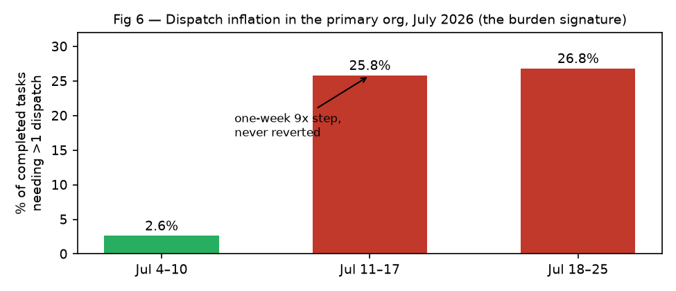
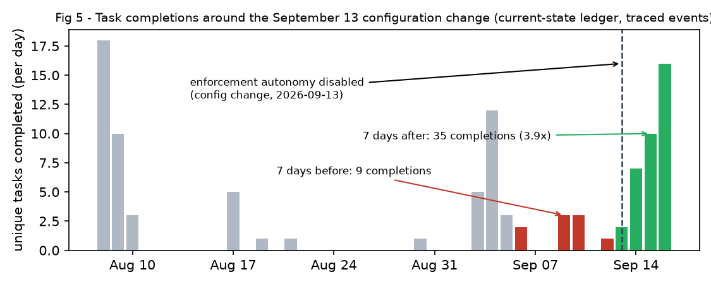
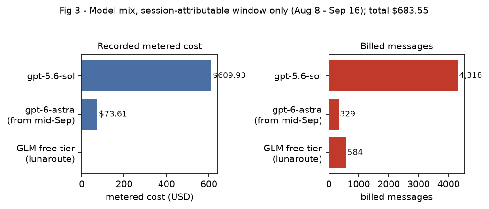

A computational ethnography of recursive constraint accretion in a hybrid human–AI organization · Poietic PBC · September 2026
Read the paper (PDF) Dataset (content-free traces)
In mid-2026, an AI agent organization slowly stopped working...
not because anything broke, but because it obeyed its own rules too well.
Between January and September 2026, the open-source coordination system worksgood (wg) was developed almost entirely by the AI agents it coordinates. Humans set direction; agents wrote the code, the tests, the review criteria, and the rules by which future work would be judged. This is the story of what happened to those rules — told from the traces the system left behind: 3,194 commits, task lifecycle ledgers across seven deployments, configuration snapshots, and completion receipts, every number below recomputable from the released dataset.
Every time agents hit a failure, they responded the way you'd want: they added a check, a gate, a contract, a rule to prevent it happening again. What no agent ever did was remove one.
The record makes this exact. One contract — the provider-failure backoff spec — was hardened five times across two bursts in August and September, each commit touching only the specification document, never shipping the functionality it governed. A census of the entire governance layer found 312 constraints added. 1 removed. Ninety-three percent of constraints were created in a single commit, never revisited, never retired: governance behaved as an append-only log, written by whichever agent had most recently responded to an incident, with no mechanism by which a constraint could die.
Recursive constraint accretion: a process in which agents responding to local failures add persistent constraints faster than the organization retires or amortizes them, causing aggregate compliance burden to grow over time. The definition does not require collapse. Collapse is one possible outcome.
By late April the organization was at peak output: 1,082 commits in one month. By May, commit volume had fallen 89%, and dated-artifact production fell identically (1,404 files in April, 104 in May). Tasks stopped completing — not because the models got dumber, and not because anything malfunctioned. The system was satisfying its own accumulated acceptance criteria. All of them. Simultaneously.

The best single artifact from the collapse period is a receipt. For the task audit-charter, the record shows implementation, validation, manifest, FLIP, and evaluation all succeeding — and publication then refused by three independent control surfaces. Every gate passed. The task died anyway.
The July window — the only pre-reset task-grain record that survives — revises what the cascade looks like up close. Raw completion was 68.8%, but 76 of those tasks were a bulk experiment cleanup, mass-abandoned mid-month. Organic completion was 93.2%: tasks kept finishing. What degraded was the price of finishing.
In the first week of July, 2.6% of completed tasks needed more than one dispatch. In the second week: 25.8%. The third: 26.8%. A nine-fold step, in one week, that never reverted — in the same month the census records 43–46 new constraints against 1–4 removals. One goal, one receipt chain: 51 total dispatches across three forked tasks, the extreme case taking 34 attempts to finally pass.

This is the cascade's task-level signature: it inflates the cost of acceptance before it kills tasks. An organization watching completion rates sees nothing until the needle closes. An organization watching burden sees it in a week.
Seven deployments of the same tool ran on the same machine over the same months. Six completed normally; only the sustained one cascaded.
| Deployment | Period | Tasks | Governance share | Completion |
|---|---|---|---|---|
| cancer_pangenome (baseline) | Feb 13 | 17 | 0% | 100% |
| cancer_pangenome_R01 | Feb–May | 385 | 0%→24%, linear | 93–100% |
| paperhedge / typelean / jobs | mid-June | 12 | 0% | ~100%, single dispatch |
| pgwas_R01 | May–Jun | 848 | 78%, stable | ~95%, 12-min median |
| wg (primary, sustained) | Jan–Sep | thousands | accelerating | 93% organic at 9× burden; −89% velocity |
The verdict is timed, not just comparative: May 12–29, exactly the primary's post-collapse trough, the cancer_pangenome deployment completed 329 tasks at 93% — including a 123-of-137 day. Same tool, same machine, same principal, concurrent campaigns. One organization was stalled by its own rules; the others were shipping grants. The cascade is organizational — sustained operation plus incident-driven hardening plus no retirement valve — not a property of the machinery.
Recovery came on September 13, when a targeted configuration change disabled the machinery's enforcement autonomy — gates stopped being added and enforced without a human decision. The effect is visible at task grain in the surviving ledger: 9 unique task completions in the seven days before the change; 35 in the seven days after. Attempts rose 14→51; the failure rate fell from 36% to 13%.

One more trace deserves the light. The whole period's recorded inference cost — the entire bureaucratic cascade, the collapse, the recovery — came to $683.55 of metered model time across a three-tier workforce. The failure mode is cheap, which is precisely why nobody notices it until the needle closes.

The mechanism is simple enough to hold in one hand: constraints accumulate when addition outruns retirement. Try it. The defaults below are the measured July rates.
If your agents can add rules but never retire them, this is your future at machine speed. The fix is a design parameter, and the traces say where to put it: price the gates, watch the burden, keep the history, and build the retirement valve before you need it. The contrast deployments show the machinery can be run safely at 0% or 78% overhead by design; the cascade only bites when addition outruns retirement for months.